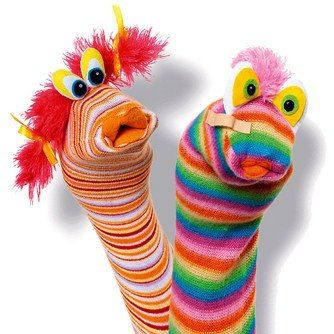

<div class="container">
  <div id="page1">
    <div  >

      <h2>Déroulement</h2>

      <ol>
        <li>
          <strong>Choisir un personnage et une chaussette qui le représentera.</strong> Essayer de trouver une
          chaussette qui remonte le plus haut possible sur le bras, afin de ne pas laisser la moitié de celui-ci visible
          quand la chaussette sera utilisée comme marionnette. Choisir une couleur adaptée à la personnalité du
          personnage. Une chaussette rayée donnera une impression de gaieté, tandis qu’une chaussette noire donnera au
          personnage un air mystérieux ou criminel.
        </li>
        <li>
          <strong>Enfiler la chaussette sur la main et l’avant-bras.</strong>Lorsque la marionnette est portée, attraper
          du tissu entre le pouce et l’index pour former la bouche du personnage. Maintenir le poignet à la
          perpendiculaire du bras, afin que le public distingue clairement la tête du corps.
        </li>
        <li>
          <strong>Ajouter des yeux en les collant à l’aide d’une goutte de colle glue.</strong> Les yeux peuvent être
          représentés avec de petits pompons, des boutons, de la laine, du tissu…
        </li>
        <li>
          <strong>Ajouter des éléments au choix.</strong> Une marionnette-chaussette peut être d’une simplicité extrême
          tout comme elle peut être sur son trente-et-un. Il est possible d’ajouter une langue en feutrine, une touffe
          de ficelle pour faire des cheveux, un ruban, une cravate ou tout ce qui donnera du caractère au personnage.

        </li>
      </ol>

      

    </div>
  </div>
</div>